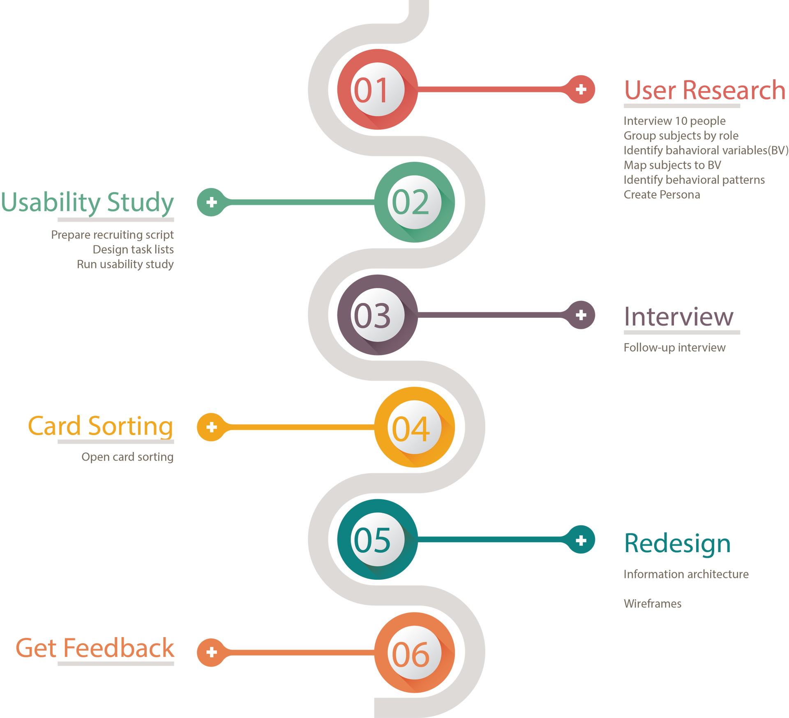

Baby Care Log
Public display application with social networking feature to motivate people to drink more water
Background
Baby Care Log is an android application that tracks and monitors the most important aspects of your baby's growth and development, such as bottle feeding, diaper changing, baby sleep, breast pumps, growth charts, bathing, and medicines for baby. In this project, I was asked to conduct user research, redesign the information architecture and wireframes of Baby Care Log. The goal is to improve user experience and help newer parents in the long run.
Design Process
User Research
I interviewed with new parents to understand their frustrations, and then analyzed the interview data to identify their behavioral patterns. The process is as follows:
- - Group interview subjects by [FAMILY] role: mom, dad and other caregivers.
- - Identify behavioral variables.
- - Map interview subjects to behavioral variables: The identified characteristics will be mapped based on the response of these participants. As expected, clusters of interview subjects will appear after mapping.
- Identify significant behavior patterns: We can see a clear trend of a cluster of users. For example, User E, B, N, and L demonstrate a similar behavior trend.
Persona
I created three types of persona - primary persona, secondary persona, and negative persona. Identifying persona will help information architect redesign to further inform wireframes and interface behaviors. The key objectives include:
- - The purpose of the app
- - Identify user characteristics
- - Understand user motivation and frustration points
- - Find touch points that our product can make a difference
Usability Testing
Before I recruited participants for usability testing and interview, I drafted the recruiting criteria focusing on the demographic information and mobile experience to make sure these participants are my target users. I also designed card sorting exercises using OptimalSort card sort.
Redesign